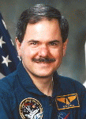

Lyndon B. Johnson Space Center
Houston, Texas 77058
|
National Aeronautics and Space Administration Lyndon B. Johnson Space Center Houston, Texas 77058 |
 |
Biographical Data |
||
Ronald A. Parise (Ph.D.)
Payload Specialist (DECEASED)
PERSONAL DATA: Born May 24, 1951, in Warren, Ohio. Died on May 9, 2008 after a three-year battle with brain cancer. He is survived by his wife, the former Cecelia M. Sokol of Youngstown, Ohio, and two grown children.
EDUCATION: Graduated from Western Reserve High School, Warren, Ohio, 1969; received his bachelor of science degree in physics, with minors in mathematics, astronomy, and geology, Youngstown State University, Ohio, 1973; and a master of science degree and a doctor of philosophy degree in astronomy, University of Florida, 1977 and 1979, respectively.
ORGANIZATIONS: American Astronomical Society, Astronomical Society of the Pacific, Association of Space Explorers, International Astronomical Union, Sigma Xi, and Phi Kappa Phi.
SPECIAL HONORS: NASA Space Flight Medal, 1991, 1995; Distinguished member of Phi Kappa Phi, 1996; Honorary Doctor of Science degree, Youngstown State University, 1996; NASA/GSFC Special Act Award, 1995; Computer Sciences Corp., Space and Earth Technology Systems, Award for Technical Innovation, 1999; NASA Group Achievement Award, 1988, 1991, 1992, 1996, 1998, 2000; NASA/GSFC Community Service Award, 1990; Allied Signal, Quest for Excellence Award, 1997.
EXPERIENCE: Upon graduation in 1979, Dr. Parise accepted a position at Operations Research Inc. ( ORI) where he was involved in developing avionics requirements definitions and performing failure mode analyses for several NASA missions. In 1980 he began work at Computer Sciences Corp. in the International Ultraviolet Explorer (IUE) operations center as a data management scientist and in 1981 became the section manager of the IUE hardcopy facility. In 1981 he began work on the development of a new Spacelab experiment called the Ultraviolet Imaging Telescope (UIT). His responsibilities involved flight hardware and software development, electronic system design, and mission planning activities for the UIT project. In 1984 he was selected by NASA as a payload specialist in support of the newly formed Astro mission series. During his twelve years as a payload specialist he was involved in mission planning, simulator development, integration and test activities, flight procedure development, and scientific data analysis, in addition to his flight crew responsibilities for the Astro program. At the completion of the Astro program Dr. Parise assumed an advanced planning and communications engineering support role for a variety of human space flight projects including Mir, International Space Station (ISS), and the X-38. Dr. Parise engaged in a number of astronomical research projects utilizing data from ground-based observatories, the Copernicus satellite (OAO-3), IUE, and the Astro observatory. His research topics, including circumsteller matter in binary star systems and the evolutionary status of stars in globular clusters, resulted in several professional publications. Dr. Parise supported the Goddard Space Flight Center, Networks and Mission Services Project, in the area of advanced communications planning for human spaceflight missions. He was also involved with projects in the Advanced Architectures and Automation Branch that are developing the use of standard Internet Protocols (IP) in space data transmission applications. A veteran of two space flights, Dr. Parise logged more than 614 hours and 10.6 million miles in space. He served as a payload specialist aboard STS-35 in 1990 and STS-67 in 1995.
SPACE FLIGHT EXPERIENCE: STS-35/Astro-1 Columbia (December 2-10, 1990). The Astro observatory is a unique complement of three telescopes designed to simultaneously record spectral data, polarimetric data and imagery of faint astronomical objects in the far ultraviolet. Mission duration was 215 hours and 5 minutes. Landing was at Edwards Air Force Base in California.
STS-67/Astro-2 Endeavour (March 2-18, 1995). This was the second flight of the Astro observatory. During this record-setting 16-day mission, the crew conducted observations around the clock to study the far ultraviolet spectra of faint astronomical objects and the polarization of ultraviolet light coming from hot stars and distant galaxies. Mission duration was 399 hours and 9 minutes. Landing was at Edwards Air Force Base in California.
MAY 2008
{kind=link}